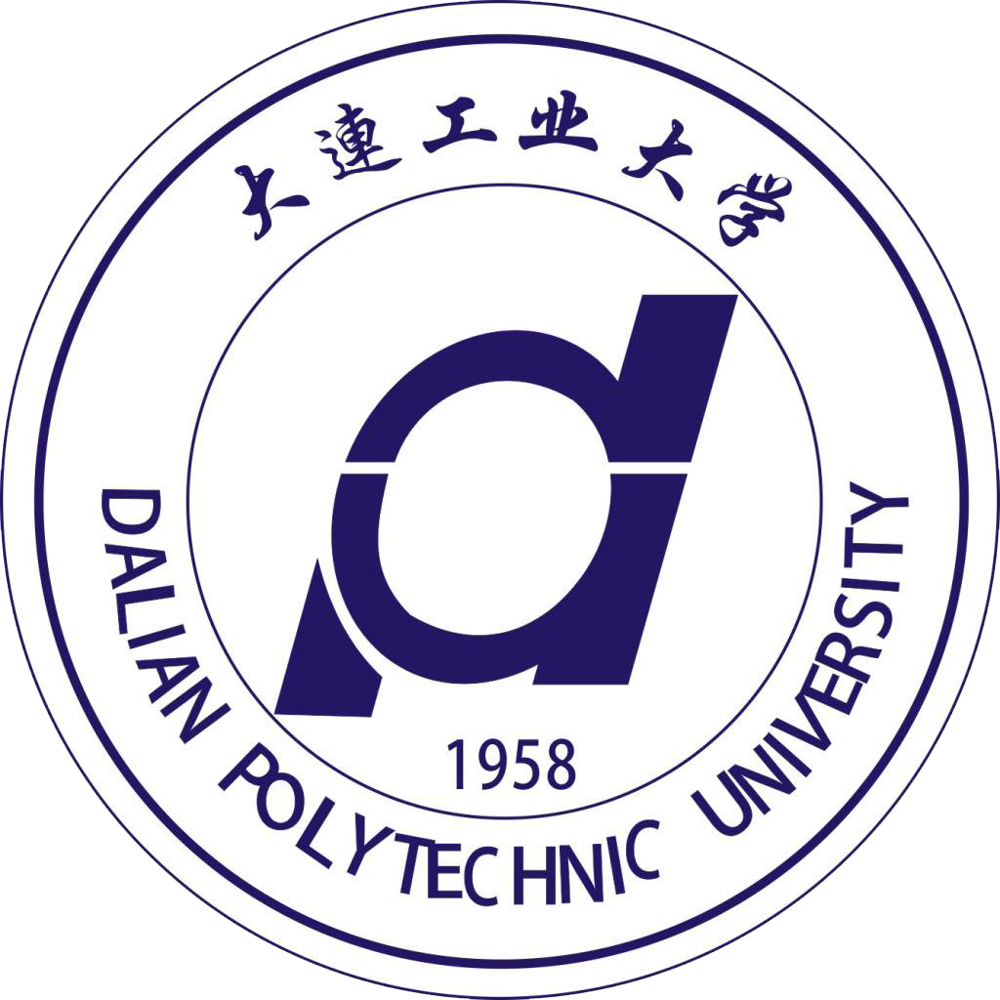

大连工业大学（Dalian Polytechnic University）原名大连轻工业学院，是辽宁省属、“卓越计划”、“2011计划”重点建设高校，国家首批卓越农林人才教育培养计划改革试点高校，CDIO工程教育联盟成员单位。校创建于1958年，是中国最早建立的4所轻工业学院之一，原隶属轻工业部，1998年划归辽宁省管理。 截止2014年7月，学校总占地面积1064亩，总建筑面积48万平方米，馆藏纸质图书59.2万册；截至2006年底，教学科研设备总值8959万元。全日制在校生近20000人，其中研究生1445人，每年招收外国留学生近400人。

据学校2014年7月官网显示，学校有专任教师近900人，其中中国 大连工业大学 大连工业大学 工程院院士1人，教授、副教授近400人，博士生、硕士生导师300余人（含外聘）。享受国务院政府特殊津贴专家28人，辽宁省高校“攀登学者”2人，辽宁省领军人才1人，辽宁省优秀专家2人，辽宁省特聘教授4人，辽宁省普通高等学校专业带头人8人，辽宁省教学名师9人，入选辽宁省“百千万人才工程”百人层次17人，入选辽宁省“百千万人才工程”千人层次人选20人，辽宁省普通高校优秀青年骨干教师20人，享受大连市政府特殊津贴人员9人，大连市有突出贡献专家2人，大连市优秀专家19人，大连市领军后备人才5人。
据学校2014年7月官网显示，学校建有国家海洋食品工程技术研究中心、海洋食品教育部工程研究中心、农业部农产品加工技术研发贝类专业分中心、海珍品精深加工国际科技合作基地、国家食品工程技术转移中心、国家中小企业公共服务示范平台等6个国家级研究平台，有1个辽宁省经济社会发展研究基地，5个辽宁省重点实验室，4个辽宁省高校重点实验室，10个省级工程研究中心， 11个市级工程研究中心及实验室。
学校坚持产学研相结合，2006年-2014年，学校共承担国家“973”项目 国家“863”项目、国家自然科学基金项目等国家级项目64项；发表学术论文3672篇，其中被3大检索收录465篇；申请国家发明专利271项；2008年，学校有效专利量和专利授权量在全国高校中排名第34位；2009年入选全国企事业知识产权试点单位；获得国家、省（部）、市级科技奖30项；2009年获得何梁何利基金科学与技术创新奖和大连市科学技术功勋奖；继2003、2005年两次获得国家技术发明二等奖后，2010年获得国家科学技术进步二等奖，受到国务院及省、市政府表彰。